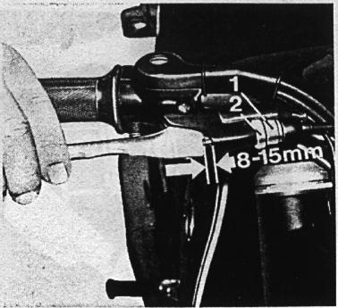
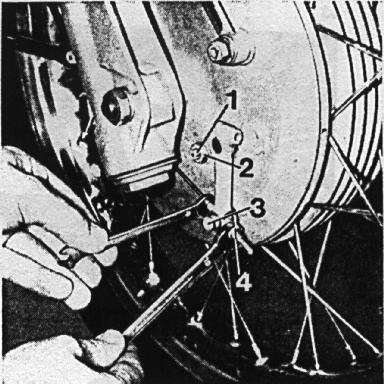
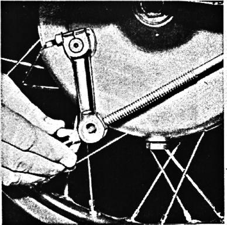

38

Check brakes regularly, at least every 3000 miles,
for their effectiveness and suffient lever travel.
Adjust front brake,
hand lever to have a play of 8-15mm (1/4"-1/2")
by turning the knurled screw 1 after loosening
the lock nut 2.
Figure 35
35

Loosen lock nut 2 (wrench size 13) of the adjustment
cam 1, turn internal hex to the left with an allen wrench
until it is tight, then turn it back to a point
where the lower front brake lever has a free movement
of 4mm,
measured at the cable anchor (3),
before the shoe is fully applied.
Tighten lock nut 2.
Now adjust the cable, but turning the nut 4 (wrench size 10)
while holding the sleeve (wrench size 4),
to get a free movement of the upper brake lever
before the uuper shoe is fully applied.
Figure 36
36

Adjust the foot brake by turning the wing nut at the end of the brake rod to the right until the rear wheel barely starts braking. Then back the wing nut off 3-4 turns.
Caution!
If there is too little free movement, the brake could
lock during operation.
Figure 37
37

The clutch
is properly adjusted when there is play of approx. 0.08"
at the clutch lever 3 on the transmission.
The play is increased by turning the knurled cable adjuster
into the clutch lever hand joint, and decreased by
unscrewing it.
When this adjustment possibility is exhausted, the play
can be decreased by tightening the clutch adjustment
screw 2 (wrench size 10) after loosening the lock nut 1
(wrench size 13) at the clutch lever on the transmission,
and increased by turning it out.
Lock the adjustment screw.
Figure 38
38